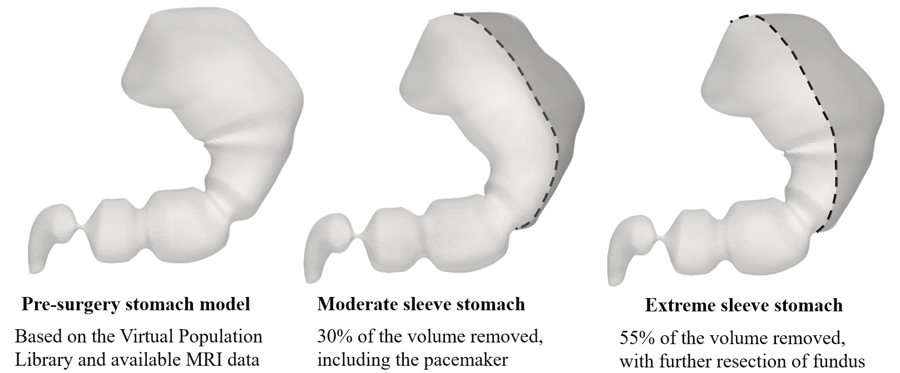
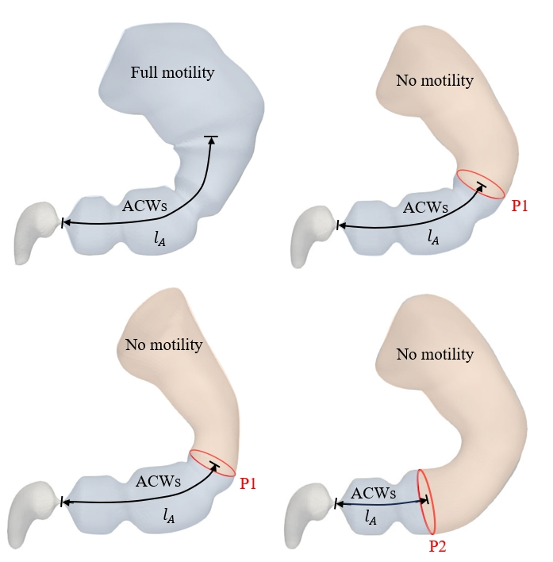
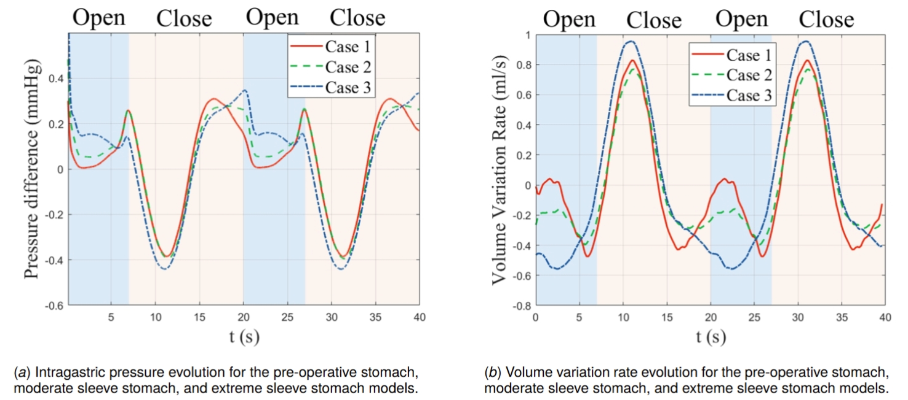

Computational modeling of bariatric surgery and multiphase flow simulation
View PDF of Preprint Manuscript
My research at Johns Hopkins University focused on understanding the biomechanical implications of laparoscopic sleeve gastrectomy (LSG), a bariatric surgery that reduces a large portion of stomach volume to facilitate weight loss. Given the global rise in obesity rates, LSG has become an increasingly important surgical intervention, yet its effects on gastric functions remain incompletely understood.
The project utilized our lab's in-house computational fluid dynamics solver, ViCar3D, which implements advanced numerical methods including immersed boundary and volume-of-fluid approaches. Based on MRI data, a pre-operative stomach model was developed, which accurately captured the complex stomach geometry. Then I constructed multiple post-operative models to represent different surgical outcomes - a moderate sleeve retaining 70% of original volume, and an extreme sleeve retaining 45%. The models also incorporated varying motility patterns to account for the impairment of gastric motility after surgery, particularly in the sleeve region where the gastric pacemaker is resected.


Through multiphase flow simulations on high-performance computing clusters, we investigated how these anatomical and functional changes affect gastric digestion. Our results revealed two key findings: First, the reduced stomach volume following LSG leads to significantly accelerated gastric emptying rates. Second, the impaired motility in the gastric sleeve reduced mixing efficiency, which could impact nutrient absorption and digestion quality.


The study uncovered the fundamental mechanisms driving these changes, particularly the altered intragastric pressure distributions and modified patterns of antral contraction waves in post-operative conditions. We found that reduced stomach volume leads to higher intragastric pressure, which combines with changes in antral contraction wave patterns to accelerate emptying. These findings have been presented at the 2024 APS Division of Fluid Dynamics, and a manuscript based on this has been submitted to the Journal of Biomechanical Engineering. This study demonstrates the potential of computational modeling in surgical planning and treatment optimization.